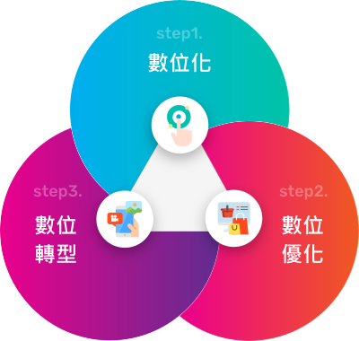
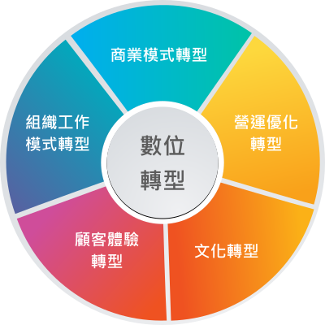

蘋果日報宣布自2021年5月18日起紙本停刊，在給讀者的公開信中指出數位洪流超乎想像，大型數位平台的壟斷，造成媒體廣告資源的大量流失，成了對蘋果日報的沈重打擊，不得不做出這個決定，把所有資源專注於數位。有人說這又是一個時代的眼淚，事實上在多變、不確定的VUCA時代註下，轉變是每間企業、甚至是你與我都要面對的課題。
數位轉型，什麼意思？
台灣人工智慧學校執行長陳昇瑋曾說：數位轉型的定義可以用一句話概括，「調整企業的人力、組織、流程、文化及商業模式，讓企業可以快速回應因數位科技所帶來的市場改變」。
數位轉型並非純粹在談數位，也不是單純在講轉型，它強調的是調適能力。一般轉型就是從A到B的轉變過程，而數位轉型講的是連續性調整，把公司調整到能夠適應環境的狀態下，每當環境一變，公司就得跟著變。
數位應用，依程度分成三大階段

- 最初階的「數位化（Digitalization）」：指的是導入電腦資訊系統，將實體資料（文字、圖片等）數位化。
- 第二階段是「數位優化（Optimization）」：指的是企業將數位工具與現有的工作模式和商品服務結合，以提升內部效率或強化顧客體驗，進而觸及更多用戶。餐廳導入行動支付，既提供消費者多元的付款選項，也強化內部結帳效率，就屬於數位優化。
- 第三階段才是現在蔚為風潮的「數位轉型（Digital
Transformation）」：指的是企業在包括企業流程、人才招聘、商品開發等組織各層面，都大規模應用數位工具，並以先前累積的數位資產為
轉型的內涵，可歸納成五大面向
企業在推動數位轉型時，大致會涉及5大面向，從客戶體驗、商業模式、企業文化到營運流程的轉變都涵蓋在內。企業可能只做單一或同時朝多個面向前進，端視整體願景、資源配置與優先順序的考量。

- 「商業模式轉型」：企業透過數位工具和資料，發展出全新的服務模式、產品和通路。Netflix從出租DVD服務轉型到數位串流服務，藉由付費訂閱制擴大營收與服務範圍，就是廣受好評的商業模式轉型。
- 「顧客體驗轉型」：透過數位工具強化對顧客的了解，提出更貼近顧客需求的服務，進而拓展銷售。星巴克2009年起推出行動支付服務，顧客可以在App中完成點餐和付款，便有效緩解了門市尖峰時間的排隊結帳人流。
- 「營運優化轉型」：透過數位工具提升企業工作流程、決策能力，以增加效率、降低成本。例如啤酒釀造需要靠老師傅多年經驗，日本麒麟啤酒因面臨人口老化問題，將老師傅釀酒的數據輸入AI系統，讓員工在開發新產品時，透過選擇酒精濃度、氣味等條件，系統就能以老師傅釀酒數據為基礎，進一步預測釀造方法，簡化研發流程。
- 「組織工作模式轉型」：透過數位工具改變既有的工作型態、模式，或因應新的商業模式，調整組織內部分工。舉例來說，疫情影響下，企業紛紛採取遠距辦公，降低群聚感染風險，員工必須調整溝通、合作的方式，讓業務順利進行。
- 「員工文化心態轉型」：不只是技術、流程的轉型，企業員工在面對新的改變時，也必須調整工作心態適應新改變。IBM就是透過線上課程，建立員工對於數位轉型的共同認知。
面對新常態，我們要有所準備
在疫情的推波助瀾下，許多商業活動被迫「零接觸、去實體化」，企業終將要面對一個嚴峻的現實：數位轉型不再是可有可無的選項，而是不得不做的必然趨勢，才能抵擋營運所受到的衝擊。當黑天鵝成為世界的新常態，我們需要更強化組織韌性（resilience）和敏捷的營運能力（agility），才能擁有即時應變的彈性與動能。